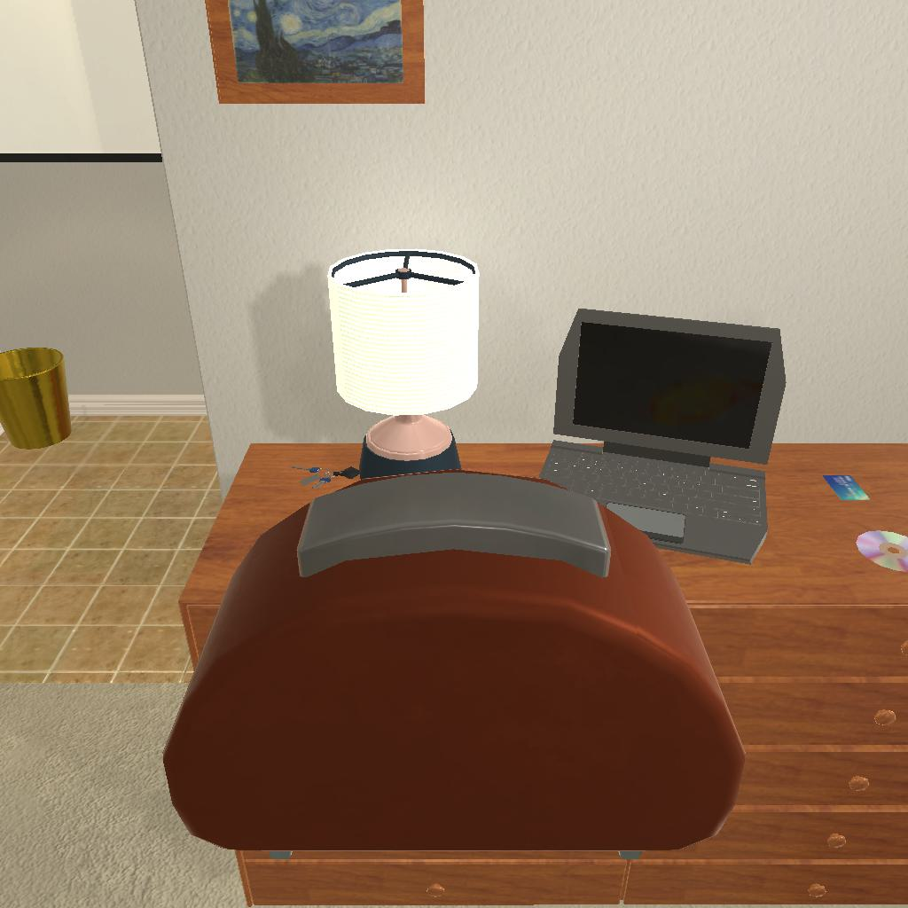

---------------------------------------------------------task: 1---------------------------------------------------------
--------------------------------------------------------------------------------------------------------------------------------------------------------------------
--------------------------------------------------------------------------------------------------------------------------------------------------------------------
Step:--------------------------------------------------------------------------3-------------------------------------------------------------------------------
----------------------------------------
VLM Prompt:
Image1:
Image2:
**Instruction**
1. Analyze the provided images to identify all visible household objects and compare the difference between images (e.h. whether the object is opened or not and taken on hand or not), focusing on those relevant to the task description "examine the alarmclock with the desklamp."
2. Use the analysis of images and the task hint "The agent must find an object of the desired type, locate and turn on a light source with the desired object in-hand." to answer the question: what is the most reasonable action in the choices for the task description "examine the alarmclock with the desklamp"?
3. Decide and write the answer using the template: The answer is: (i): , where i is the real number. If there is no desired object in images, search every place based on **Initial Observation** to find the object. And if no one is exactly correct, choose a similar answer.
**Initial Observation**
You are in the middle of a room. Looking quickly around you, you can see bed (1), dresser (1), drawer (1-10), garbagecan (1), shelf (1-7)
**Answer Choices**
(1): go to bed 1
(2): go to dresser 1
(3): go to drawer 1
(4): go to drawer 2
(5): go to drawer 4
(6): go to drawer 5
(7): go to garbagecan 1
(8): go to drawer 6
(9): go to drawer 7
(10): go to drawer 8
(11): go to drawer 9
(12): go to drawer 10
(13): go to shelf 1
(14): go to shelf 2
(15): go to shelf 3
(16): go to shelf 4
(17): go to shelf 5
(18): go to shelf 6
(19): go to shelf 7
(20): open drawer 3
(21): close drawer 3
(22): take laptop 1 from drawer 3
(23): take alarmclock 1 from drawer 3
(24): take cd 1 from drawer 3
(25): take creditcard 1 from drawer 3
(26): take pen 1 from drawer 3
(27): take keychain 1 from drawer 3
**Answer**
Let's think step by step by following the instructions.
----------------------------------------
----------------------------------------
Original Response:
Firstly, analyzing the provided images, we can identify a few household objects:
- A laptop on the dresser.
- An alarm clock in front of the laptop.
- A desk lamp next to the alarm clock.
- Various small items like a pen, credit card, and CD near the laptop.
- A painting on the wall.
- A trashcan in the corner of the room.
The difference between the two images is the state of the desk lamp. In Image 1, the lampshade is green and appears to be off. In Image 2, the lampshade is white, indicating that the lamp is now on.
Given the task description "examine the alarmclock with the desklamp," and the task hint suggesting that the agent must find an object of the desired type (alarm clock), locate and turn on a light source (desk lamp) with the desired object in hand, we can deduce that the agent has already accomplished part of the task by turning on the desk lamp as seen in Image 2.
The most reasonable next action in the choices for the task description would be to take the alarm clock in hand to examine it under the light of the desk lamp.
However, none of the answer choices directly state taking the alarm clock in hand. Since the alarm clock is already visible on the dresser, there is no need to search for it in drawers or shelves. Therefore, we need to choose the answer that is most similar to the action of taking the alarm clock in hand.
The answer is: (23): take alarmclock 1 from drawer 3.
----------------------------------------
----------------------------------------
>>> Refine Original VLM Response and Get Pure Action: take alarmclock 1 from drawer 3
----------------------------------------
-----------------------------------------------------------------
Running time: 22.684203624725342 seconds
Total Money: 0.48480000000000006
-----------------------------------------------------------------
-----------------------------------------------------------------
Text Observation:You pick up the alarmclock 1 from the drawer 3.
-----------------------------------------------------------------
SUCCEED